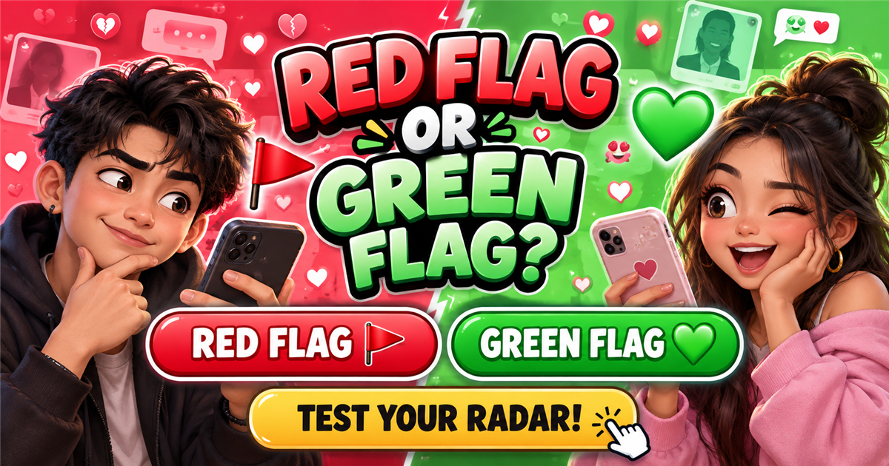

PINOY DATING RADAR
Red Flag
or Green Flag?
Dating radar ready10 quick calls
How good is your dating radar?
Make ten fast calls. No overthinking—just red flag or green flag.
WHAT DOES YOUR RADAR SAY?
OR
YOUR DATING RADAR RESULT
RADAR SCORE
Try another quiz →
Ten situations. One dating radar.
Late replies, exes, passwords, support, apologies—make the call before your barkada starts a full investigation.
Your final score shows whether you spot the signs instantly, read mixed signals, or still believe “I can fix them.”